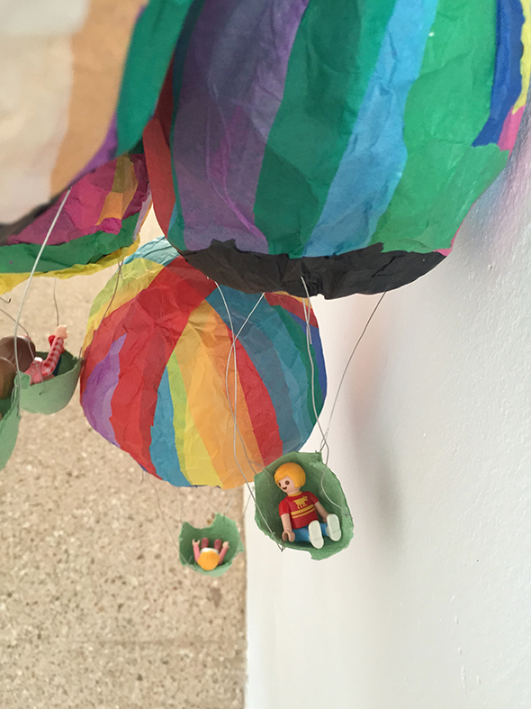

Klebe farbiges Transparentpapier mit Kleister um einen Luftballon.
Wenn der Kleber getrocknet ist, kann man den Ballon kaputt machen und herraus nehmen.
Mit Draht haben wir ein Eierkarton befestigt.
So fliegen die Playmobil Figuren durch die Wohnung!
Die Ballons sind von Carolina, Alvaro, Andrea Hannah und Noah.
